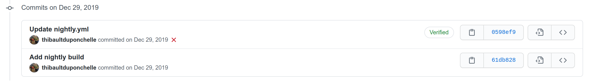
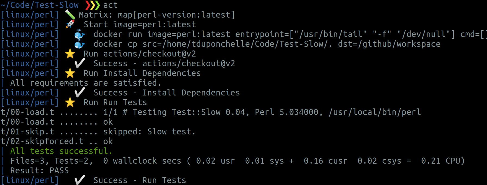
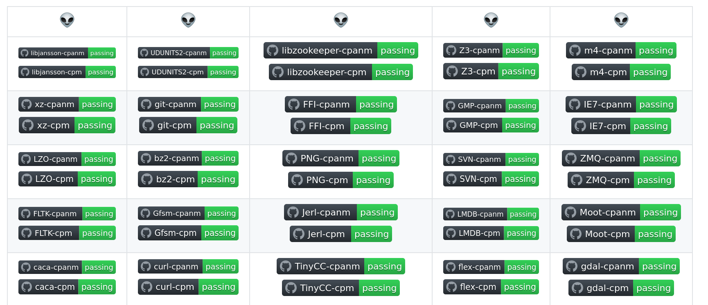
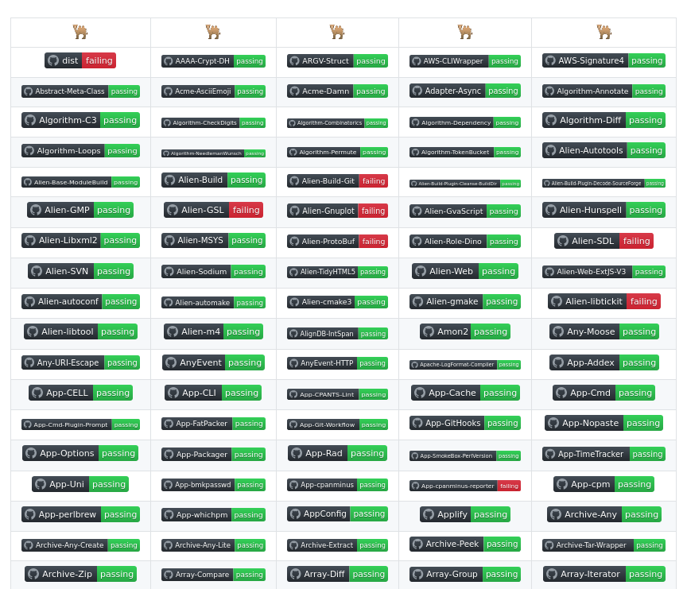
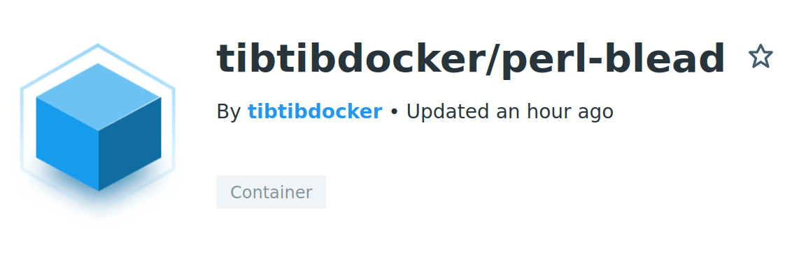
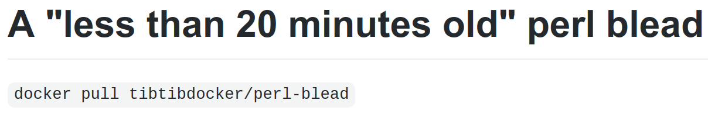
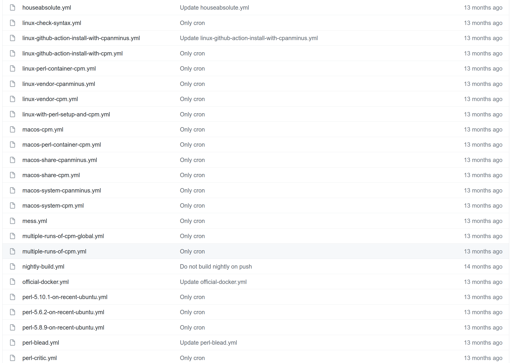
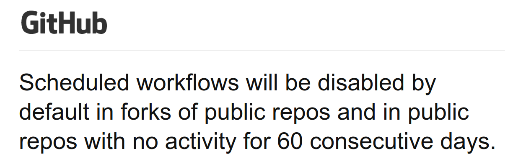
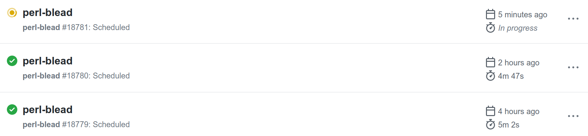
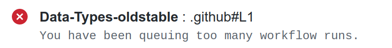

My big year of GitHub actions
08 august 2019 [GitHub actions become free for public repos](https://github.blog/2019-08-08-github-actions-now-supports-ci-cd/)
29 december 2019 For The Record: my first GitHub workflow 
25 february 2020 [Act now supports GitHub actions v2](https://github.com/nektos/act/) 
28 april 2020 A dashboard to nightly test 226 aliens: [aliens-ci](https://github.com/thibaultduponchelle/aliens-ci) 
GitHub Actions are free and unlimited... How much is "unlimited" exactly?
The answer ~is~ was: QUEUING! ⏳ (and GNU/Linux workers)
Then I tried: - 3000 jobs - Build CPAN modules (the river) - Every night
14 may 2020 An experimental dashboard for the river: [river-ci](https://github.com/thibaultduponchelle/river-ci) 
14 may 2020 Switch builds to my custom [perl-blead](https://hub.docker.com/r/tibtibdocker/perl-blead) ([source](https://github.com/thibaultduponchelle/docker-perl-blead))  
14 may 2020 Messy CI Workflows: [A set of Perl workflows examples](https://github.com/thibaultduponchelle/messy-ci-workflows)

17 september 2020 GitHub announcement: release of [cli 1.0](https://github.blog/2020-09-17-github-cli-1-0-is-now-available/)
01 october 2020 GitHub new policy: Auto disable scheduled workflows 
23 october 2020 🤯
02 november 2020 Travis CI new policy: [New pricing model](https://blog.travis-ci.com/2020-11-02-travis-ci-new-billing) 🥺 😕 😒
20 november 2020 Docker new policy: [Download pull limit](https://docs.docker.com/docker-hub/download-rate-limit/) 😕 😕 😕
8 february 2021 [Crypto-mining attack through Pull Request](https://dev.to/thibaultduponchelle/the-github-action-mining-attack-through-pull-request-2lmc) ☠ 🙀 😬 (you could [bypass your limits](https://github.com/thibaultduponchelle/parallel-runners/pull/1) with pull requests)
19 march 2021 My own GitHub action: [Upload to CPAN](https://dev.to/thibaultduponchelle/new-upload-to-cpan-github-action-4h8j) ([source](https://github.com/thibaultduponchelle/action-upload-to-cpan))
15 april 2021 GitHub announced [gh workflow subcommand](https://github.blog/2021-04-15-work-with-github-actions-in-your-terminal-with-github-cli/) in its **cli**
16 april 2021 I re-enable my workflows with this one-liner: ```bash gh workflow list --all --limit 10000 | cut -d$'\t' -f3 | tr "\n" "\0" | xargs -0 -n1 gh workflow enable ``` 💪 🤷 🤫 😏
22 april 2021 GitHub new policy: [Combat bad actors](https://github.blog/2021-04-22-github-actions-update-helping-maintainers-combat-bad-actors/) <br/><br/><br/> "Pull requests from first-time contributors will **require manual approval** from a repository collaborator with write access **before any Actions workflows run**"
02 june 2021 Slowdown of scheduled jobs  Supposed to run every 20 minutes ```yml on: push: schedule: - cron: '*/20 * * * *' ```
04 june 2021 Too much queuing now leads to errors  (or jobs get ignored)
Thank you!